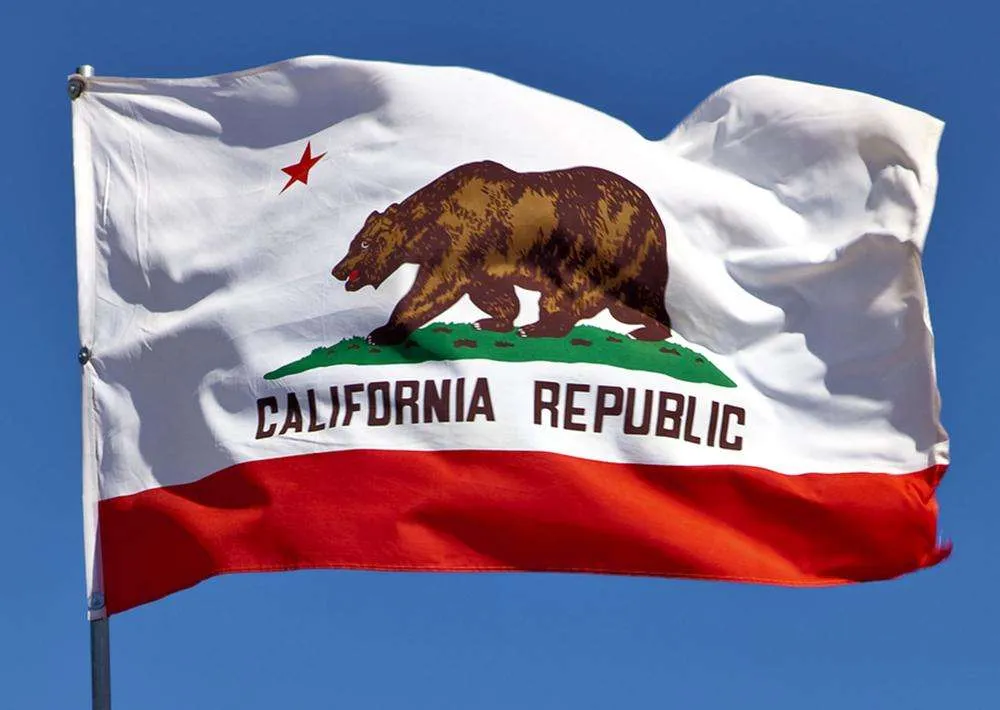

About Me
I was born and live in California, the place always on fire. I'm a big fan of Lord of the Rings, Dungeons & Dragons, and all things nerdy! I'm also incredibly excited to learn more about coding. The web development field is fascinating to me, and I'm eager to expand my knowledge and skills. I look forward to building things on the web and mastering the languages that make the internet come to life.
About California
California, the Golden State, is one of the most diverse and culturally rich states in the U.S. Known for its beautiful coastlines, majestic mountains, sprawling deserts, and vibrant cities, California is also home to some of the world’s most iconic landmarks, such as the Golden Gate Bridge, Yosemite National Park, and Disneyland.
The state boasts a wide range of climates, from the arid desert landscapes in the south to the temperate coastal regions in the north. However, California is also known for its wildfires, which are an unfortunate consequence of its hot and dry summers. Despite the risks, Californians remain resilient and proud of their home state.
California is also a hub for technology and innovation, particularly in Silicon Valley, where major tech companies like Apple, Google, and Facebook are headquartered. It’s also a global leader in the entertainment industry, with Hollywood being the epicenter of film and television production.
Whether it’s the scenic beauty, thriving tech scene, or the unique cultural vibe, California has something for everyone. It’s a state full of opportunities and endless exploration!